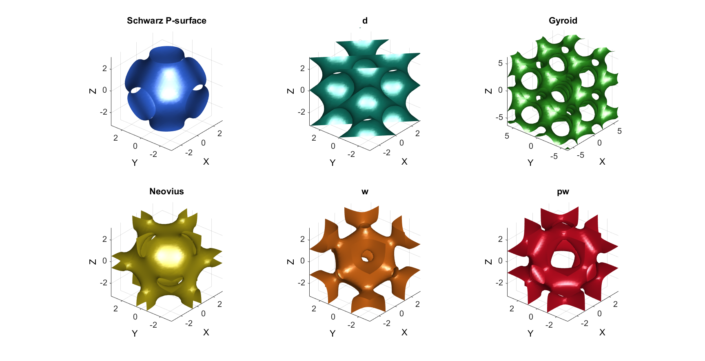
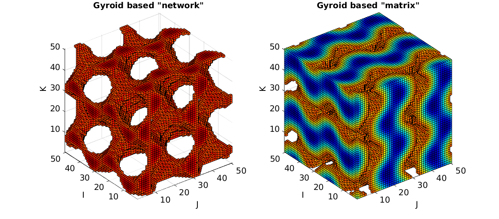

triplyPeriodicMinimal
Below is a demonstration of the features of the triplyPeriodicMinimal function
Contents
clear; close all; clc;
Plot settings
cMap=jet(250); faceAlpha1=1; faceAlpha2=0.65; edgeColor1='none'; edgeColor2='none'; fontSize=15;
SURFACE VISUALIZATIONS
pColors=gjet(6); n=35; cFigure; [X,Y,Z]=meshgrid(linspace(-pi,pi,n)); S=triplyPeriodicMinimal(X,Y,Z,'p'); [F,V] = isosurface(X,Y,Z,S,0.1); subplot(2,3,1); title('Schwarz P-surface','FontSize',fontSize); xlabel('X','FontSize',fontSize);ylabel('Y','FontSize',fontSize); zlabel('Z','FontSize',fontSize); hold on; patch('Faces',F,'Vertices',V,'FaceColor',pColors(1,:),'EdgeColor','none','FaceAlpha',1); axis equal; view(3); axis tight; axis vis3d; grid on; set(gca,'FontSize',fontSize); camlight headlight; lighting phong; view(-50,30); [X,Y,Z]=meshgrid(linspace(-pi,pi,n)); S=triplyPeriodicMinimal(X,Y,Z,'d'); [F,V] = isosurface(X,Y,Z,S,0.1); subplot(2,3,2); title('d','FontSize',fontSize); xlabel('X','FontSize',fontSize);ylabel('Y','FontSize',fontSize); zlabel('Z','FontSize',fontSize); hold on; patch('Faces',F,'Vertices',V,'FaceColor',pColors(2,:),'EdgeColor','none','FaceAlpha',1); axis equal; view(3); axis tight; axis vis3d; grid on; set(gca,'FontSize',fontSize); camlight headlight; lighting phong; view(-50,30); [X,Y,Z]=meshgrid(linspace(-2*pi,2*pi,n)); S=triplyPeriodicMinimal(X,Y,Z,'g'); [F,V] = isosurface(X,Y,Z,S,0.6); subplot(2,3,3); title('Gyroid','FontSize',fontSize); xlabel('X','FontSize',fontSize);ylabel('Y','FontSize',fontSize); zlabel('Z','FontSize',fontSize); hold on; patch('Faces',F,'Vertices',V,'FaceColor',pColors(3,:),'EdgeColor','none','FaceAlpha',1); axis equal; view(3); axis tight; axis vis3d; grid on; set(gca,'FontSize',fontSize); camlight headlight; lighting phong; view(-50,30); [X,Y,Z]=meshgrid(linspace(-pi,pi,n)); S=triplyPeriodicMinimal(X,Y,Z,'n'); [F,V] = isosurface(X,Y,Z,S,0); subplot(2,3,4); title('Neovius','FontSize',fontSize); xlabel('X','FontSize',fontSize);ylabel('Y','FontSize',fontSize); zlabel('Z','FontSize',fontSize); hold on; patch('Faces',F,'Vertices',V,'FaceColor',pColors(4,:),'EdgeColor','none','FaceAlpha',1); axis equal; view(3); axis tight; axis vis3d; grid on; set(gca,'FontSize',fontSize); camlight headlight; lighting phong; view(-50,30); [X,Y,Z]=meshgrid(linspace(-pi,pi,n)); S=triplyPeriodicMinimal(X,Y,Z,'w'); [F,V] = isosurface(X,Y,Z,S,-0.1); subplot(2,3,5); title('w','FontSize',fontSize); xlabel('X','FontSize',fontSize);ylabel('Y','FontSize',fontSize); zlabel('Z','FontSize',fontSize); hold on; patch('Faces',F,'Vertices',V,'FaceColor',pColors(5,:),'EdgeColor','none','FaceAlpha',1); axis equal; view(3); axis tight; axis vis3d; grid on; set(gca,'FontSize',fontSize); camlight headlight; lighting phong; view(-50,30); [X,Y,Z]=meshgrid(linspace(-pi,pi,n)); S=triplyPeriodicMinimal(X,Y,Z,'pw'); [F,V] = isosurface(X,Y,Z,S,0.5); subplot(2,3,6); title('pw','FontSize',fontSize); xlabel('X','FontSize',fontSize);ylabel('Y','FontSize',fontSize); zlabel('Z','FontSize',fontSize); hold on; patch('Faces',F,'Vertices',V,'FaceColor',pColors(6,:),'EdgeColor','none','FaceAlpha',1); axis equal; view(3); axis tight; axis vis3d; grid on; set(gca,'FontSize',fontSize); camlight headlight; lighting phong; view(-50,30); drawnow;
EXAMPLE SIMULATING REGULARIZED TRABECULAE OR POROUS MEDIA
n=50; [X,Y,Z]=meshgrid(linspace(-2*pi,2*pi,n)); S=triplyPeriodicMinimal(X,Y,Z,'g'); T=0.6; L=S>=(max(S(:))*T); [F1,V1,C1]=ind2patch(L,S,'vb'); T=0.6; L=S<(max(S(:))*T); [F2,V2,C2]=ind2patch(L,S,'vb'); cFigure; subplot(1,2,1); title('Gyroid based "network"','FontSize',fontSize); xlabel('J','FontSize',fontSize);ylabel('I','FontSize',fontSize); zlabel('K','FontSize',fontSize); hold on; patch('Faces',F1,'Vertices',V1,'FaceColor','flat','CData',C1,'EdgeColor','k','FaceAlpha',1); axis equal; view(3); axis tight; axis vis3d; grid on; colormap(cMap); caxis([min(S(:)) max(S(:))]); set(gca,'FontSize',fontSize); subplot(1,2,2); title('Gyroid based "matrix"','FontSize',fontSize); xlabel('J','FontSize',fontSize);ylabel('I','FontSize',fontSize); zlabel('K','FontSize',fontSize); hold on; patch('Faces',F2,'Vertices',V2,'FaceColor','flat','CData',C2,'EdgeColor','k','FaceAlpha',1); axis equal; view(3); axis tight; axis vis3d; grid on; colormap(cMap); caxis([min(S(:)) max(S(:))]); set(gca,'FontSize',fontSize); drawnow;

GIBBON www.gibboncode.org
Kevin Mattheus Moerman, gibbon.toolbox@gmail.com